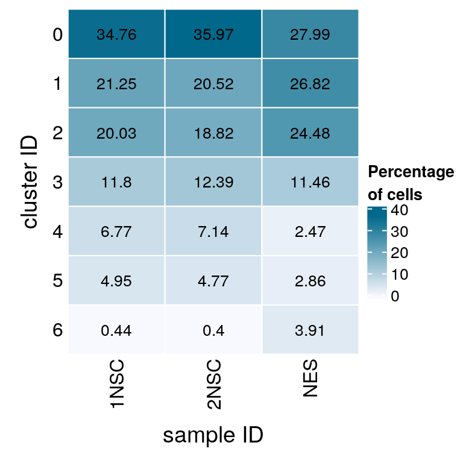
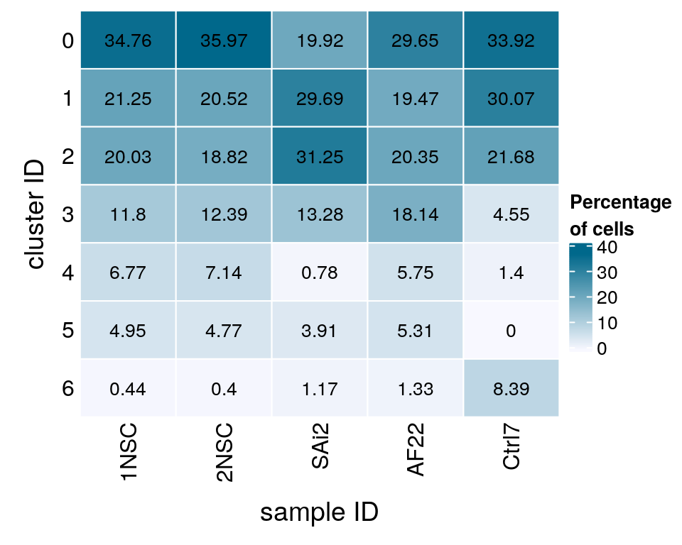
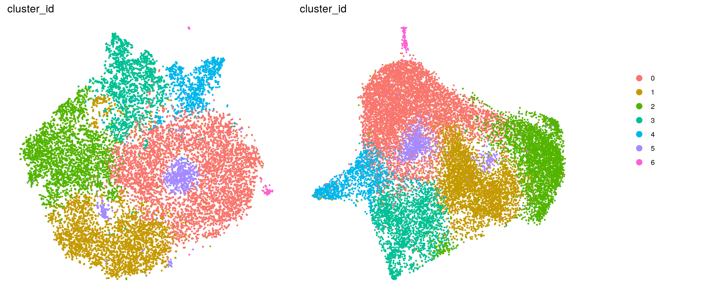
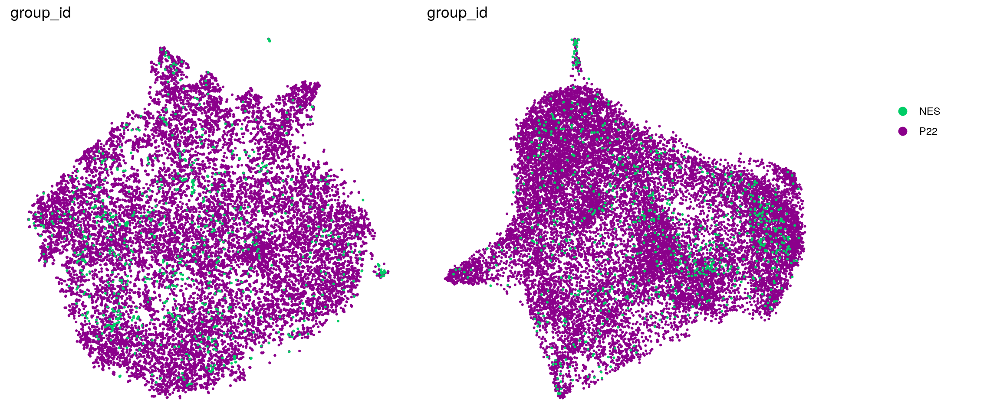
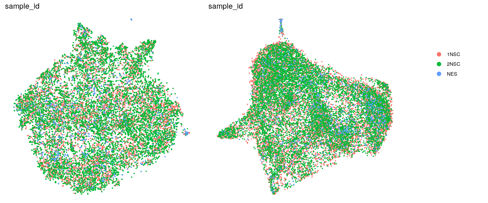

Last updated: 2021-05-26
Checks: 7 0
Knit directory: neural_scRNAseq/
This reproducible R Markdown analysis was created with workflowr (version 1.6.2). The Checks tab describes the reproducibility checks that were applied when the results were created. The Past versions tab lists the development history.
Great! Since the R Markdown file has been committed to the Git repository, you know the exact version of the code that produced these results.
Great job! The global environment was empty. Objects defined in the global environment can affect the analysis in your R Markdown file in unknown ways. For reproduciblity it's best to always run the code in an empty environment.
The command set.seed(20200522) was run prior to running the code in the R Markdown file. Setting a seed ensures that any results that rely on randomness, e.g. subsampling or permutations, are reproducible.
Great job! Recording the operating system, R version, and package versions is critical for reproducibility.
Nice! There were no cached chunks for this analysis, so you can be confident that you successfully produced the results during this run.
Great job! Using relative paths to the files within your workflowr project makes it easier to run your code on other machines.
Great! You are using Git for version control. Tracking code development and connecting the code version to the results is critical for reproducibility.
The results in this page were generated with repository version 5ebe77e. See the Past versions tab to see a history of the changes made to the R Markdown and HTML files.
Note that you need to be careful to ensure that all relevant files for the analysis have been committed to Git prior to generating the results (you can use wflow_publish or wflow_git_commit). workflowr only checks the R Markdown file, but you know if there are other scripts or data files that it depends on. Below is the status of the Git repository when the results were generated:
Ignored files:
Ignored: .DS_Store
Ignored: .Rhistory
Ignored: .Rproj.user/
Ignored: ._.DS_Store
Ignored: ._Filtered.pdf
Ignored: ._Rplots.pdf
Ignored: ._Unfiltered.pdf
Ignored: .__workflowr.yml
Ignored: ._coverage.pdf
Ignored: ._coverage_sashimi.pdf
Ignored: ._coverage_sashimi.png
Ignored: ._neural_scRNAseq.Rproj
Ignored: ._pbDS_cell_level.pdf
Ignored: ._pbDS_top_expr_umap.pdf
Ignored: ._pbDS_upset.pdf
Ignored: ._sashimi.pdf
Ignored: ._stmn2.pdf
Ignored: ._tdp.pdf
Ignored: analysis/.DS_Store
Ignored: analysis/.Rhistory
Ignored: analysis/._.DS_Store
Ignored: analysis/._01-preprocessing.Rmd
Ignored: analysis/._01-preprocessing.html
Ignored: analysis/._02.1-SampleQC.Rmd
Ignored: analysis/._03-filtering.Rmd
Ignored: analysis/._04-clustering.Rmd
Ignored: analysis/._04-clustering.knit.md
Ignored: analysis/._04.1-cell_cycle.Rmd
Ignored: analysis/._05-annotation.Rmd
Ignored: analysis/._07-cluster-analysis-all-timepoints.Rmd
Ignored: analysis/._Lam-0-NSC_no_integration.Rmd
Ignored: analysis/._Lam-01-NSC_integration.Rmd
Ignored: analysis/._Lam-02-NSC_annotation.Rmd
Ignored: analysis/._NSC-1-clustering.Rmd
Ignored: analysis/._NSC-2-annotation.Rmd
Ignored: analysis/.__site.yml
Ignored: analysis/._additional_filtering.Rmd
Ignored: analysis/._additional_filtering_clustering.Rmd
Ignored: analysis/._index.Rmd
Ignored: analysis/._organoid-01-1-qualtiy-control.Rmd
Ignored: analysis/._organoid-01-clustering.Rmd
Ignored: analysis/._organoid-02-integration.Rmd
Ignored: analysis/._organoid-03-cluster_analysis.Rmd
Ignored: analysis/._organoid-04-group_integration.Rmd
Ignored: analysis/._organoid-04-stage_integration.Rmd
Ignored: analysis/._organoid-05-group_integration_cluster_analysis.Rmd
Ignored: analysis/._organoid-05-stage_integration_cluster_analysis.Rmd
Ignored: analysis/._organoid-06-1-prepare-sce.Rmd
Ignored: analysis/._organoid-06-conos-analysis-Seurat.Rmd
Ignored: analysis/._organoid-06-conos-analysis-function.Rmd
Ignored: analysis/._organoid-06-conos-analysis.Rmd
Ignored: analysis/._organoid-06-group-integration-conos-analysis.Rmd
Ignored: analysis/._organoid-07-conos-visualization.Rmd
Ignored: analysis/._organoid-07-group-integration-conos-visualization.Rmd
Ignored: analysis/._organoid-08-conos-comparison.Rmd
Ignored: analysis/._organoid-0x-sample_integration.Rmd
Ignored: analysis/01-preprocessing_cache/
Ignored: analysis/02-1-SampleQC_cache/
Ignored: analysis/02-quality_control_cache/
Ignored: analysis/02.1-SampleQC_cache/
Ignored: analysis/03-filtering_cache/
Ignored: analysis/04-clustering_cache/
Ignored: analysis/04.1-cell_cycle_cache/
Ignored: analysis/05-annotation_cache/
Ignored: analysis/06-clustering-all-timepoints_cache/
Ignored: analysis/07-cluster-analysis-all-timepoints_cache/
Ignored: analysis/CH-test-01-preprocessing_cache/
Ignored: analysis/CH-test-02-transgene-expression_cache/
Ignored: analysis/CH-test-03-cluster-analysis_cache/
Ignored: analysis/Lam-01-NSC_integration_cache/
Ignored: analysis/NSC-1-clustering_cache/
Ignored: analysis/NSC-2-annotation_cache/
Ignored: analysis/TDP-01-preprocessing_cache/
Ignored: analysis/TDP-02-quality_control_cache/
Ignored: analysis/TDP-03-filtering_cache/
Ignored: analysis/TDP-04-clustering_cache/
Ignored: analysis/TDP-05-00-filtering-plasmid-QC_cache/
Ignored: analysis/TDP-05-plasmid_expression_cache/
Ignored: analysis/TDP-06-cluster_analysis_cache/
Ignored: analysis/TDP-07-01-STMN2_expression_cache/
Ignored: analysis/TDP-07-cluster_12_cache/
Ignored: analysis/TDP-08-00-clustering-HA-D96_cache/
Ignored: analysis/TDP-08-01-HA-D96-expression-changes_cache/
Ignored: analysis/TDP-08-02-TDP_target_genes_cache/
Ignored: analysis/TDP-08-clustering-timeline-HA_cache/
Ignored: analysis/additional_filtering_cache/
Ignored: analysis/additional_filtering_clustering_cache/
Ignored: analysis/organoid-01-1-qualtiy-control_cache/
Ignored: analysis/organoid-01-clustering_cache/
Ignored: analysis/organoid-02-integration_cache/
Ignored: analysis/organoid-03-cluster_analysis_cache/
Ignored: analysis/organoid-04-group_integration_cache/
Ignored: analysis/organoid-04-stage_integration_cache/
Ignored: analysis/organoid-05-group_integration_cluster_analysis_cache/
Ignored: analysis/organoid-05-stage_integration_cluster_analysis_cache/
Ignored: analysis/organoid-06-conos-analysis_cache/
Ignored: analysis/organoid-06-conos-analysis_test_cache/
Ignored: analysis/organoid-06-group-integration-conos-analysis_cache/
Ignored: analysis/organoid-07-conos-visualization_cache/
Ignored: analysis/organoid-07-group-integration-conos-visualization_cache/
Ignored: analysis/organoid-08-conos-comparison_cache/
Ignored: analysis/organoid-0x-sample_integration_cache/
Ignored: analysis/sample5_QC_cache/
Ignored: analysis/timepoints-01-organoid-integration_cache/
Ignored: analysis/timepoints-02-cluster-analysis_cache/
Ignored: data/.DS_Store
Ignored: data/._.DS_Store
Ignored: data/._.smbdeleteAAA17ed8b4b
Ignored: data/._Lam_figure2_markers.R
Ignored: data/._README.md
Ignored: data/._Reactive_astrocytes_markers.xlsx
Ignored: data/._known_NSC_markers.R
Ignored: data/._known_cell_type_markers.R
Ignored: data/._metadata.csv
Ignored: data/._virus_cell_tropism_markers.R
Ignored: data/._~$Reactive_astrocytes_markers.xlsx
Ignored: data/data_sushi/
Ignored: data/filtered_feature_matrices/
Ignored: output/.DS_Store
Ignored: output/._.DS_Store
Ignored: output/._NSC_cluster2_marker_genes.txt
Ignored: output/._TDP-06-no_integration_cluster12_marker_genes.txt
Ignored: output/._TDP-06-no_integration_cluster13_marker_genes.txt
Ignored: output/._organoid_integration_cluster1_marker_genes.txt
Ignored: output/._tbl_TDP-08-01-muscat_cluster_0.txt
Ignored: output/._tbl_TDP-08-01-muscat_cluster_1.txt
Ignored: output/._tbl_TDP-08-01-muscat_cluster_10.txt
Ignored: output/._tbl_TDP-08-01-muscat_cluster_11.txt
Ignored: output/._tbl_TDP-08-01-muscat_cluster_12.txt
Ignored: output/._tbl_TDP-08-01-muscat_cluster_13.txt
Ignored: output/._tbl_TDP-08-01-muscat_cluster_14.txt
Ignored: output/._tbl_TDP-08-01-muscat_cluster_5.txt
Ignored: output/._tbl_TDP-08-01-muscat_cluster_7.txt
Ignored: output/._tbl_TDP-08-01-muscat_cluster_8.txt
Ignored: output/._tbl_TDP-08-01-muscat_cluster_all.xlsx
Ignored: output/._tbl_TDP-08-02-targets_hek_cluster_0.txt
Ignored: output/._tbl_TDP-08-02-targets_hek_cluster_1.txt
Ignored: output/._tbl_TDP-08-02-targets_hek_cluster_10.txt
Ignored: output/._tbl_TDP-08-02-targets_hek_cluster_11.txt
Ignored: output/._tbl_TDP-08-02-targets_hek_cluster_12.txt
Ignored: output/._tbl_TDP-08-02-targets_hek_cluster_13.txt
Ignored: output/._tbl_TDP-08-02-targets_hek_cluster_14.txt
Ignored: output/._tbl_TDP-08-02-targets_hek_cluster_5.txt
Ignored: output/._tbl_TDP-08-02-targets_hek_cluster_7.txt
Ignored: output/._tbl_TDP-08-02-targets_hek_cluster_8.txt
Ignored: output/._tbl_TDP-08-02-targets_hek_cluster_all.xlsx
Ignored: output/._~$tbl_TDP-08-02-targets_hek_cluster_all.xlsx
Ignored: output/CH-test-01-preprocessing.rds
Ignored: output/CH-test-01-preprocessing_singlets.rds
Ignored: output/CH-test-01-preprocessing_singlets_filtered.rds
Ignored: output/CH-test-01-preprocessing_so.rds
Ignored: output/CH-test-01-preprocessing_so_filtered.rds
Ignored: output/CH-test-03-cluster-analysis_so.rds
Ignored: output/CH-test-03_scran_markers.rds
Ignored: output/Lam-01-clustering.rds
Ignored: output/NSC_1_clustering.rds
Ignored: output/NSC_cluster1_marker_genes.txt
Ignored: output/NSC_cluster2_marker_genes.txt
Ignored: output/NSC_cluster3_marker_genes.txt
Ignored: output/NSC_cluster4_marker_genes.txt
Ignored: output/NSC_cluster5_marker_genes.txt
Ignored: output/NSC_cluster6_marker_genes.txt
Ignored: output/NSC_cluster7_marker_genes.txt
Ignored: output/TDP-06-no_integration_cluster0_marker_genes.txt
Ignored: output/TDP-06-no_integration_cluster10_marker_genes.txt
Ignored: output/TDP-06-no_integration_cluster11_marker_genes.txt
Ignored: output/TDP-06-no_integration_cluster12_marker_genes.txt
Ignored: output/TDP-06-no_integration_cluster13_marker_genes.txt
Ignored: output/TDP-06-no_integration_cluster14_marker_genes.txt
Ignored: output/TDP-06-no_integration_cluster15_marker_genes.txt
Ignored: output/TDP-06-no_integration_cluster16_marker_genes.txt
Ignored: output/TDP-06-no_integration_cluster17_marker_genes.txt
Ignored: output/TDP-06-no_integration_cluster1_marker_genes.txt
Ignored: output/TDP-06-no_integration_cluster2_marker_genes.txt
Ignored: output/TDP-06-no_integration_cluster3_marker_genes.txt
Ignored: output/TDP-06-no_integration_cluster4_marker_genes.txt
Ignored: output/TDP-06-no_integration_cluster5_marker_genes.txt
Ignored: output/TDP-06-no_integration_cluster6_marker_genes.txt
Ignored: output/TDP-06-no_integration_cluster7_marker_genes.txt
Ignored: output/TDP-06-no_integration_cluster8_marker_genes.txt
Ignored: output/TDP-06-no_integration_cluster9_marker_genes.txt
Ignored: output/TDP-06_scran_markers.rds
Ignored: output/additional_filtering.rds
Ignored: output/conos/
Ignored: output/conos_organoid-06-conos-analysis.rds
Ignored: output/conos_organoid-06-group-integration-conos-analysis.rds
Ignored: output/figures/
Ignored: output/organoid_integration_cluster10_marker_genes.txt
Ignored: output/organoid_integration_cluster11_marker_genes.txt
Ignored: output/organoid_integration_cluster12_marker_genes.txt
Ignored: output/organoid_integration_cluster13_marker_genes.txt
Ignored: output/organoid_integration_cluster14_marker_genes.txt
Ignored: output/organoid_integration_cluster15_marker_genes.txt
Ignored: output/organoid_integration_cluster16_marker_genes.txt
Ignored: output/organoid_integration_cluster17_marker_genes.txt
Ignored: output/organoid_integration_cluster1_marker_genes.txt
Ignored: output/organoid_integration_cluster2_marker_genes.txt
Ignored: output/organoid_integration_cluster3_marker_genes.txt
Ignored: output/organoid_integration_cluster4_marker_genes.txt
Ignored: output/organoid_integration_cluster5_marker_genes.txt
Ignored: output/organoid_integration_cluster6_marker_genes.txt
Ignored: output/organoid_integration_cluster7_marker_genes.txt
Ignored: output/organoid_integration_cluster8_marker_genes.txt
Ignored: output/organoid_integration_cluster9_marker_genes.txt
Ignored: output/res_TDP-08-01-muscat.rds
Ignored: output/sce_01_preprocessing.rds
Ignored: output/sce_02_quality_control.rds
Ignored: output/sce_03_filtering.rds
Ignored: output/sce_03_filtering_all_genes.rds
Ignored: output/sce_06-1-prepare-sce.rds
Ignored: output/sce_TDP-08-01-muscat.rds
Ignored: output/sce_TDP_01_preprocessing.rds
Ignored: output/sce_TDP_02_quality_control.rds
Ignored: output/sce_TDP_03_filtering.rds
Ignored: output/sce_TDP_03_filtering_all_genes.rds
Ignored: output/sce_organoid-01-clustering.rds
Ignored: output/sce_preprocessing.rds
Ignored: output/so_04-stage_integration.rds
Ignored: output/so_04_1_cell_cycle.rds
Ignored: output/so_04_clustering.rds
Ignored: output/so_06-clustering_all_timepoints.rds
Ignored: output/so_08-00_clustering_HA_D96.rds
Ignored: output/so_08-clustering_timeline_HA.rds
Ignored: output/so_0x-sample_integration.rds
Ignored: output/so_CH-test-02-transgene_expression.rds
Ignored: output/so_TDP-06-cluster-analysis.rds
Ignored: output/so_TDP_04_clustering.rds
Ignored: output/so_TDP_05_plasmid_expression.rds
Ignored: output/so_additional_filtering_clustering.rds
Ignored: output/so_integrated_organoid-02-integration.rds
Ignored: output/so_merged_organoid-02-integration.rds
Ignored: output/so_organoid-01-clustering.rds
Ignored: output/so_sample_organoid-01-clustering.rds
Ignored: output/so_timepoints-01-organoid_integration.rds
Ignored: output/tbl_TDP-08-01-muscat.rds
Ignored: output/tbl_TDP-08-01-muscat_cluster_0.txt
Ignored: output/tbl_TDP-08-01-muscat_cluster_1.txt
Ignored: output/tbl_TDP-08-01-muscat_cluster_10.txt
Ignored: output/tbl_TDP-08-01-muscat_cluster_11.txt
Ignored: output/tbl_TDP-08-01-muscat_cluster_12.txt
Ignored: output/tbl_TDP-08-01-muscat_cluster_13.txt
Ignored: output/tbl_TDP-08-01-muscat_cluster_14.txt
Ignored: output/tbl_TDP-08-01-muscat_cluster_5.txt
Ignored: output/tbl_TDP-08-01-muscat_cluster_7.txt
Ignored: output/tbl_TDP-08-01-muscat_cluster_8.txt
Ignored: output/tbl_TDP-08-01-muscat_cluster_all.xlsx
Ignored: output/tbl_TDP-08-02-targets_hek.rds
Ignored: output/tbl_TDP-08-02-targets_hek_cluster_0.txt
Ignored: output/tbl_TDP-08-02-targets_hek_cluster_1.txt
Ignored: output/tbl_TDP-08-02-targets_hek_cluster_10.txt
Ignored: output/tbl_TDP-08-02-targets_hek_cluster_11.txt
Ignored: output/tbl_TDP-08-02-targets_hek_cluster_12.txt
Ignored: output/tbl_TDP-08-02-targets_hek_cluster_13.txt
Ignored: output/tbl_TDP-08-02-targets_hek_cluster_14.txt
Ignored: output/tbl_TDP-08-02-targets_hek_cluster_5.txt
Ignored: output/tbl_TDP-08-02-targets_hek_cluster_7.txt
Ignored: output/tbl_TDP-08-02-targets_hek_cluster_8.txt
Ignored: output/tbl_TDP-08-02-targets_hek_cluster_all.xlsx
Ignored: output/~$tbl_TDP-08-02-targets_hek_cluster_all.xlsx
Ignored: scripts/.DS_Store
Ignored: scripts/._.DS_Store
Ignored: scripts/._bu_Rcode.R
Ignored: scripts/._plasmid_expression.sh
Ignored: scripts/._plasmid_expression_cell_hashing_test.sh
Ignored: scripts/._prepare_salmon_transcripts.R
Untracked files:
Untracked: Filtered.pdf
Untracked: Rplots.pdf
Untracked: Unfiltered
Untracked: Unfiltered.pdf
Untracked: analysis/Lam-0-NSC_no_integration.Rmd
Untracked: analysis/TDP-07-01-STMN2_expression copy.Rmd
Untracked: analysis/additional_filtering.Rmd
Untracked: analysis/additional_filtering_clustering.Rmd
Untracked: analysis/organoid-01-1-qualtiy-control.Rmd
Untracked: analysis/organoid-06-conos-analysis-Seurat.Rmd
Untracked: analysis/organoid-06-conos-analysis-function.Rmd
Untracked: analysis/organoid-07-conos-visualization.Rmd
Untracked: analysis/organoid-07-group-integration-conos-visualization.Rmd
Untracked: analysis/organoid-08-conos-comparison.Rmd
Untracked: analysis/organoid-0x-sample_integration.Rmd
Untracked: analysis/sample5_QC.Rmd
Untracked: coverage.pdf
Untracked: coverage_sashimi.pdf
Untracked: coverage_sashimi.png
Untracked: data/Homo_sapiens.GRCh38.98.sorted.gtf
Untracked: data/Kanton_et_al/
Untracked: data/Lam_et_al/
Untracked: data/Sep2020/
Untracked: data/cell_hashing_test/
Untracked: data/cell_hashing_test_FB/
Untracked: data/reference/
Untracked: data/virus_cell_tropism_markers.R
Untracked: data/~$Reactive_astrocytes_markers.xlsx
Untracked: pbDS_cell_level.pdf
Untracked: pbDS_heatmap.pdf
Untracked: pbDS_top_expr_umap.pdf
Untracked: pbDS_upset.pdf
Untracked: sashimi.pdf
Untracked: scripts/bu_Rcode.R
Untracked: scripts/bu_code.Rmd
Untracked: scripts/plasmid_expression_cell_hashing_test.sh
Untracked: scripts/prepare_salmon_transcripts_cell_hashing_test.R
Untracked: scripts/salmon-latest_linux_x86_64/
Untracked: stmn2.pdf
Untracked: tdp.pdf
Unstaged changes:
Modified: analysis/05-annotation.Rmd
Modified: analysis/TDP-04-clustering.Rmd
Modified: analysis/TDP-08-01-HA-D96-expression-changes.Rmd
Modified: analysis/_site.yml
Modified: analysis/organoid-02-integration.Rmd
Modified: analysis/organoid-04-group_integration.Rmd
Modified: analysis/organoid-06-conos-analysis.Rmd
Note that any generated files, e.g. HTML, png, CSS, etc., are not included in this status report because it is ok for generated content to have uncommitted changes.
These are the previous versions of the repository in which changes were made to the R Markdown (analysis/Lam-02-NSC_annotation.Rmd) and HTML (docs/Lam-02-NSC_annotation.html) files. If you've configured a remote Git repository (see ?wflow_git_remote), click on the hyperlinks in the table below to view the files as they were in that past version.
| File | Version | Author | Date | Message |
|---|---|---|---|---|
| Rmd | 5ebe77e | khembach | 2021-05-26 | change color of NES and iCoMoNSCs in DR |
| html | 489b5df | khembach | 2021-04-06 | Build site. |
| Rmd | d76adbd | khembach | 2021-04-06 | update heatmaps |
| html | d515c70 | khembach | 2020-08-19 | Build site. |
| Rmd | eb3e64d | khembach | 2020-08-19 | split NES into cell lines |
| html | e659e63 | khembach | 2020-08-07 | Build site. |
| Rmd | 7562682 | khembach | 2020-08-07 | adjust fig sizes |
| html | 875e3c5 | khembach | 2020-07-10 | Build site. |
| Rmd | 15a0ad2 | khembach | 2020-07-10 | compare cell cluster membership before and after NES integration; merge |
| html | a1ebb78 | khembach | 2020-07-08 | Build site. |
| Rmd | d8bd339 | khembach | 2020-07-08 | NSC integration with NES from Lam et al. |
library(ComplexHeatmap)
library(cowplot)
library(ggplot2)
library(dplyr)
library(muscat)
library(purrr)
library(RColorBrewer)
library(viridis)
library(scran)
library(Seurat)
library(SingleCellExperiment)
library(stringr)
library(RCurl)
library(BiocParallel)so <- readRDS(file.path("output", "Lam-01-clustering.rds"))
sce <- as.SingleCellExperiment(so, assay = "RNA")
colData(sce) <- as.data.frame(colData(sce)) %>%
mutate_if(is.character, as.factor) %>%
DataFrame(row.names = colnames(sce))cluster_cols <- grep("res.[0-9]", colnames(colData(sce)), value = TRUE)
sapply(colData(sce)[cluster_cols], nlevels) SCT_snn_res.0.8 RNA_snn_res.0.4 integrated_snn_res.0.1
0 7 5
integrated_snn_res.0.2 integrated_snn_res.0.4 integrated_snn_res.0.8
6 7 12
integrated_snn_res.1 integrated_snn_res.1.2 integrated_snn_res.2
14 17 24 # set cluster IDs to resolution 0.4 clustering
so <- SetIdent(so, value = "integrated_snn_res.0.4")
so@meta.data$cluster_id <- Idents(so)
sce$cluster_id <- Idents(so)
(n_cells <- table(sce$cluster_id, sce$sample_id))
1NSC 2NSC NES
0 2896 3024 215
1 1770 1725 206
2 1669 1582 188
3 983 1042 88
4 564 600 19
5 412 401 22
6 37 34 30fqs <- prop.table(n_cells, margin = 2)
mat <- round(as.matrix(unclass(fqs))*100, 2)
colfunc <- colorRampPalette(c("ghostwhite", "deepskyblue4"))
Heatmap(mat,
col = colfunc(10),
name = "Percentage\nof cells",
cluster_rows = FALSE,
cluster_columns = FALSE,
row_names_side = "left",
row_title = "cluster ID",
column_title = "sample ID",
column_title_side = "bottom",
rect_gp = gpar(col = "white"),
cell_fun = function(i, j, x, y, width, height, fill)
grid.text(mat[j, i], x = x, y = y,
gp = gpar(col = "black", fontsize = 10)))
We split the cells from Lam et al. into the three different cell lines that they used in the paper.
ind <- which(sce$sample_id == "NES")
cell_label <- sce$sample_id
levels(cell_label) <- c(levels(cell_label), levels(sce$Cell_line))
cell_label[ind] <- sce$Cell_line[ind]
cell_label <- droplevels(cell_label)
levels(cell_label)[levels(cell_label)==".SAi2"] <- "SAi2"
so$cell_label <- cell_label
(n_cells_line <- table(sce$cluster_id, cell_label)) cell_label
1NSC 2NSC SAi2 AF22 Ctrl7
0 2896 3024 51 67 97
1 1770 1725 76 44 86
2 1669 1582 80 46 62
3 983 1042 34 41 13
4 564 600 2 13 4
5 412 401 10 12 0
6 37 34 3 3 24fqs <- prop.table(n_cells_line, margin = 2)
mat <- round(as.matrix(unclass(fqs))*100, 2)
Heatmap(mat,
col = colfunc(10),
name = "Percentage\nof cells",
cluster_rows = FALSE,
cluster_columns = FALSE,
row_names_side = "left",
row_title = "cluster ID",
column_title = "sample ID",
column_title_side = "bottom",
rect_gp = gpar(col = "white"),
cell_fun = function(i, j, x, y, width, height, fill)
grid.text(mat[j, i], x = x, y = y,
gp = gpar(col = "black", fontsize = 10)))
In the paper, they identified clusters that were specific for different cell types. For our analysis, we merge identical cell subtypes from the different cell lines.
levels(sce$cell_subtype_nes) [1] "Glia_progenitor" "Neural_prog_Proliferating_SAi2"
[3] "Neural_progenitor" "Neural_progenitor_Ctrl7"
[5] "Neural_progenitor_SAi2" "Neuroblast_Ctrl7"
[7] "Radial_Glia_progenitor" ## merge identical cell subtypes
levels(sce$cell_subtype_nes) <-
c("Glia_progenitor", "Neural_prog_Proliferating", "Neural_progenitor",
"Neural_progenitor", "Neural_progenitor", "Neuroblast",
"Radial_Glia_progenitor")
levels(sce$cell_subtype_nes) [1] "Glia_progenitor" "Neural_prog_Proliferating"
[3] "Neural_progenitor" "Neuroblast"
[5] "Radial_Glia_progenitor" (n_types <- table(sce$cluster_id, sce$cell_subtype_nes))
Glia_progenitor Neural_prog_Proliferating Neural_progenitor Neuroblast
0 44 13 121 2
1 26 62 103 0
2 33 20 113 2
3 43 7 38 0
4 15 1 3 0
5 7 4 11 0
6 0 2 8 18
Radial_Glia_progenitor
0 35
1 15
2 20
3 0
4 0
5 0
6 2fqs <- prop.table(n_types, margin = 2)
mat <- round(as.matrix(unclass(fqs))*100, 2)
Heatmap(mat,
col = colfunc(10),
name = "Percentage\nof cells",
cluster_rows = FALSE,
cluster_columns = FALSE,
row_names_side = "left",
row_title = "cluster ID",
column_title = "sample ID",
column_title_side = "bottom",
rect_gp = gpar(col = "white"),
cell_fun = function(i, j, x, y, width, height, fill)
grid.text(mat[j, i], x = x, y = y,
gp = gpar(col = "black", fontsize = 10)))
.plot_dr <- function(so, dr, id)
DimPlot(so, group.by = id, reduction = dr, pt.size = 0.4) +
guides(col = guide_legend(nrow = 11,
override.aes = list(size = 3, alpha = 1))) +
theme_void() + theme(aspect.ratio = 1)
ids <- c("cluster_id", "group_id", "sample_id", "cell_label")
for (id in ids) {
cat("## ", id, "\n")
p1 <- .plot_dr(so, "tsne", id)
p2 <- .plot_dr(so, "umap", id)
if(id == "group_id") {
p1 <- p1 + scale_color_manual(values = c("springgreen3", "darkmagenta"))
p2 <- p2 + scale_color_manual(values = c("springgreen3", "darkmagenta"))
}
lgd <- get_legend(p1)
p1 <- p1 + theme(legend.position = "none")
p2 <- p2 + theme(legend.position = "none")
ps <- plot_grid(plotlist = list(p1, p2), nrow = 1)
p <- plot_grid(ps, lgd, nrow = 1, rel_widths = c(1, 0.2))
print(p)
cat("\n\n")
}


Similar to figure 2f in paper.
## source file with list of known marker genes
source(file.path("data", "Lam_figure2_markers.R"))
fs <- lapply(fs, sapply, function(g)
grep(pattern = paste0("\\.", g, "$"), rownames(sce), value = TRUE)
)
fs <- lapply(fs, function(x) unlist(x[lengths(x) !=0]) )
gs <- gsub(".*\\.", "", unlist(fs))
ns <- vapply(fs, length, numeric(1))
ks <- rep.int(names(fs), ns)
labs <- lapply(fs, function(x) gsub(".*\\.", "",x))# split cells by cluster
cs_by_k <- split(colnames(sce), sce$cluster_id)
# compute cluster-marker means
ms_by_cluster <- lapply(fs, function(gs) vapply(cs_by_k, function(i)
Matrix::rowMeans(logcounts(sce)[gs, i, drop = FALSE]),
numeric(length(gs))))
# prep. for plotting & scale b/w 0 and 1
mat <- do.call("rbind", ms_by_cluster)
mat <- muscat:::.scale(mat)
rownames(mat) <- gs
cols <- muscat:::.cluster_colors[seq_along(fs)]
cols <- setNames(cols, names(fs))
row_anno <- rowAnnotation(
df = data.frame(label = factor(ks, levels = names(fs))),
col = list(label = cols), gp = gpar(col = "white"))
# percentage of cells from each of the samples per cluster
sample_props <- prop.table(n_cells, margin = 1)
col_mat <- as.matrix(unclass(sample_props))
sample_cols <- c("#882255", "#CC6677", "#11588A")
sample_cols <- setNames(sample_cols, colnames(col_mat))
col_anno <- HeatmapAnnotation(
perc_sample = anno_barplot(col_mat, gp = gpar(fill = sample_cols),
height = unit(2, "cm"),
border = FALSE),
annotation_label = "fraction of sample\nin cluster",
gap = unit(10, "points"))
col_lgd <- Legend(labels = names(sample_cols),
title = "sample",
legend_gp = gpar(fill = sample_cols))
hm <- Heatmap(mat,
name = "scaled avg.\nexpression",
col = viridis(10),
cluster_rows = FALSE,
cluster_columns = FALSE,
row_names_side = "left",
column_title = "cluster_id",
column_title_side = "bottom",
column_names_side = "bottom",
column_names_rot = 0,
column_names_centered = TRUE,
rect_gp = gpar(col = "white"),
left_annotation = row_anno,
top_annotation = col_anno)
draw(hm, annotation_legend_list = list(col_lgd))
sessionInfo()R version 4.0.5 (2021-03-31)
Platform: x86_64-pc-linux-gnu (64-bit)
Running under: Ubuntu 18.04.5 LTS
Matrix products: default
BLAS: /usr/local/R/R-4.0.5/lib/libRblas.so
LAPACK: /usr/local/R/R-4.0.5/lib/libRlapack.so
locale:
[1] LC_CTYPE=en_US.UTF-8 LC_NUMERIC=C
[3] LC_TIME=en_US.UTF-8 LC_COLLATE=en_US.UTF-8
[5] LC_MONETARY=en_US.UTF-8 LC_MESSAGES=en_US.UTF-8
[7] LC_PAPER=en_US.UTF-8 LC_NAME=C
[9] LC_ADDRESS=C LC_TELEPHONE=C
[11] LC_MEASUREMENT=en_US.UTF-8 LC_IDENTIFICATION=C
attached base packages:
[1] parallel stats4 grid stats graphics grDevices utils
[8] datasets methods base
other attached packages:
[1] BiocParallel_1.22.0 RCurl_1.98-1.3
[3] stringr_1.4.0 SeuratObject_4.0.1
[5] Seurat_4.0.1 scran_1.16.0
[7] SingleCellExperiment_1.10.1 SummarizedExperiment_1.18.1
[9] DelayedArray_0.14.0 matrixStats_0.56.0
[11] Biobase_2.48.0 GenomicRanges_1.40.0
[13] GenomeInfoDb_1.24.2 IRanges_2.22.2
[15] S4Vectors_0.26.1 BiocGenerics_0.34.0
[17] viridis_0.5.1 viridisLite_0.3.0
[19] RColorBrewer_1.1-2 purrr_0.3.4
[21] muscat_1.2.1 dplyr_1.0.2
[23] ggplot2_3.3.2 cowplot_1.0.0
[25] ComplexHeatmap_2.4.2 workflowr_1.6.2
loaded via a namespace (and not attached):
[1] reticulate_1.16 tidyselect_1.1.0
[3] lme4_1.1-23 RSQLite_2.2.0
[5] AnnotationDbi_1.50.1 htmlwidgets_1.5.1
[7] Rtsne_0.15 munsell_0.5.0
[9] codetools_0.2-16 ica_1.0-2
[11] statmod_1.4.34 future_1.17.0
[13] miniUI_0.1.1.1 withr_2.4.1
[15] colorspace_1.4-1 knitr_1.29
[17] ROCR_1.0-11 tensor_1.5
[19] listenv_0.8.0 labeling_0.3
[21] git2r_0.27.1 GenomeInfoDbData_1.2.3
[23] polyclip_1.10-0 farver_2.0.3
[25] bit64_0.9-7 glmmTMB_1.0.2.1
[27] rprojroot_1.3-2 vctrs_0.3.4
[29] generics_0.0.2 xfun_0.15
[31] R6_2.4.1 doParallel_1.0.15
[33] ggbeeswarm_0.6.0 clue_0.3-57
[35] rsvd_1.0.3 locfit_1.5-9.4
[37] spatstat.utils_2.1-0 bitops_1.0-6
[39] cachem_1.0.4 promises_1.1.1
[41] scales_1.1.1 beeswarm_0.2.3
[43] gtable_0.3.0 globals_0.12.5
[45] goftest_1.2-2 rlang_0.4.10
[47] genefilter_1.70.0 GlobalOptions_0.1.2
[49] splines_4.0.5 TMB_1.7.16
[51] lazyeval_0.2.2 spatstat.geom_2.1-0
[53] abind_1.4-5 yaml_2.2.1
[55] reshape2_1.4.4 backports_1.1.9
[57] httpuv_1.5.4 tools_4.0.5
[59] spatstat.core_2.1-2 ellipsis_0.3.1
[61] gplots_3.0.4 ggridges_0.5.2
[63] Rcpp_1.0.5 plyr_1.8.6
[65] progress_1.2.2 zlibbioc_1.34.0
[67] prettyunits_1.1.1 rpart_4.1-15
[69] deldir_0.2-10 pbapply_1.4-2
[71] GetoptLong_1.0.1 zoo_1.8-8
[73] ggrepel_0.8.2 cluster_2.1.0
[75] colorRamps_2.3 fs_1.5.0
[77] variancePartition_1.18.2 magrittr_1.5
[79] data.table_1.12.8 scattermore_0.7
[81] lmerTest_3.1-2 circlize_0.4.10
[83] lmtest_0.9-37 RANN_2.6.1
[85] whisker_0.4 fitdistrplus_1.1-1
[87] hms_0.5.3 patchwork_1.0.1
[89] mime_0.9 evaluate_0.14
[91] xtable_1.8-4 pbkrtest_0.4-8.6
[93] XML_3.99-0.4 gridExtra_2.3
[95] shape_1.4.4 compiler_4.0.5
[97] scater_1.16.2 tibble_3.0.3
[99] KernSmooth_2.23-17 crayon_1.3.4
[101] minqa_1.2.4 htmltools_0.5.0
[103] mgcv_1.8-31 later_1.1.0.1
[105] tidyr_1.1.0 geneplotter_1.66.0
[107] DBI_1.1.0 MASS_7.3-51.6
[109] rappdirs_0.3.1 boot_1.3-25
[111] Matrix_1.3-3 gdata_2.18.0
[113] igraph_1.2.5 pkgconfig_2.0.3
[115] numDeriv_2016.8-1.1 spatstat.sparse_2.0-0
[117] plotly_4.9.2.1 foreach_1.5.0
[119] annotate_1.66.0 vipor_0.4.5
[121] dqrng_0.2.1 blme_1.0-4
[123] XVector_0.28.0 digest_0.6.25
[125] sctransform_0.3.2 RcppAnnoy_0.0.18
[127] spatstat.data_2.1-0 rmarkdown_2.3
[129] leiden_0.3.3 uwot_0.1.10
[131] edgeR_3.30.3 DelayedMatrixStats_1.10.1
[133] shiny_1.5.0 gtools_3.8.2
[135] rjson_0.2.20 nloptr_1.2.2.2
[137] lifecycle_1.0.0 nlme_3.1-148
[139] jsonlite_1.7.2 BiocNeighbors_1.6.0
[141] limma_3.44.3 pillar_1.4.6
[143] lattice_0.20-41 fastmap_1.0.1
[145] httr_1.4.2 survival_3.2-3
[147] glue_1.4.2 png_0.1-7
[149] iterators_1.0.12 bit_1.1-15.2
[151] stringi_1.4.6 blob_1.2.1
[153] DESeq2_1.28.1 BiocSingular_1.4.0
[155] caTools_1.18.0 memoise_2.0.0
[157] irlba_2.3.3 future.apply_1.6.0